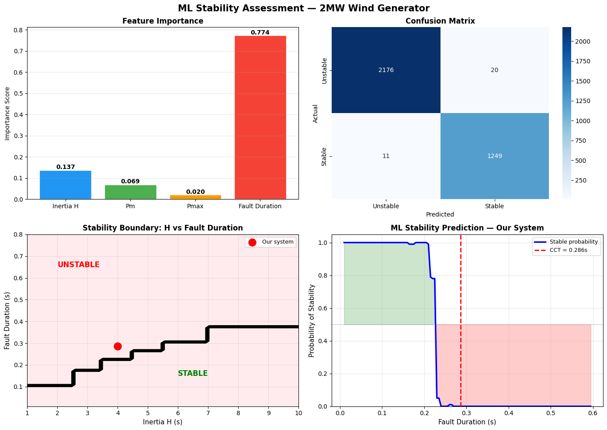
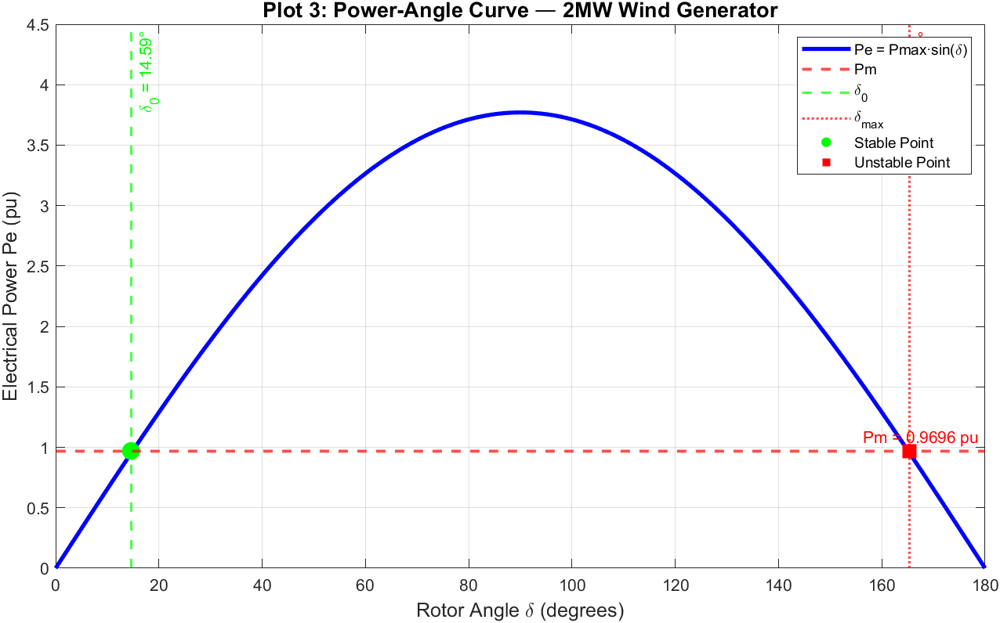
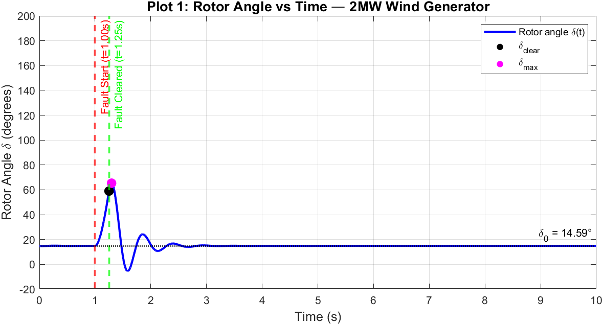
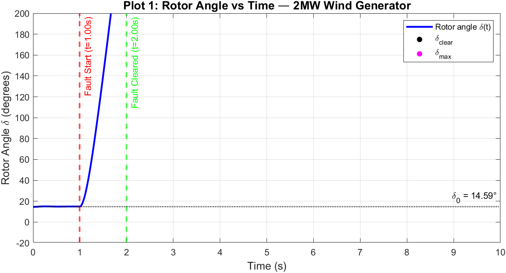
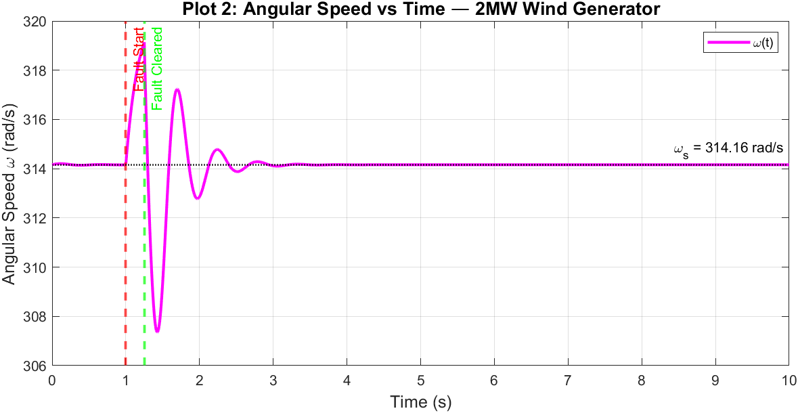
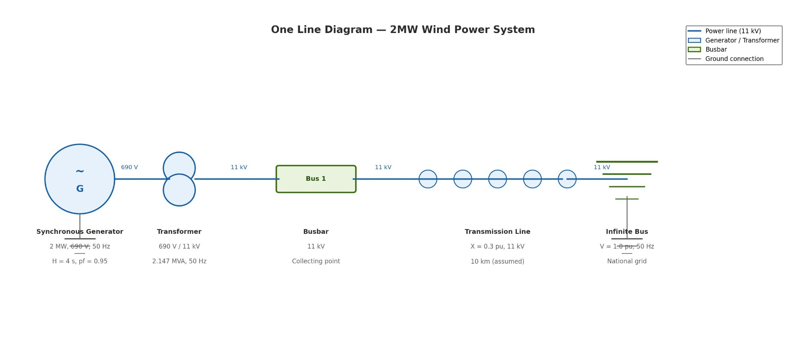

Renewable energy & grid integration
How solar, wind, and energy storage can be integrated reliably into existing power networks.
I am completing my Bachelor of Engineering in Electrical Engineering at Mehran University of Engineering & Technology, with interests in renewable energy, power system stability, and the role of intelligent technologies in modern electrical networks.
My work connects engineering analysis with practical challenges — from modelling generator stability in MATLAB to developing a hybrid solar panel cleaning system. I have also gained hands-on experience across solar, wind, grid, and thermal power facilities in Pakistan.
Questions I want to keep investigating.
How solar, wind, and energy storage can be integrated reliably into existing power networks.
Transient stability, grid operation, protection, and modelling the response of power networks to disturbances.
Using data, machine learning, and control methods in smart grids, microgrids, electric vehicles, and battery storage.
Understanding how energy-intensive computing interacts with power demand, infrastructure, and system flexibility.
Selected engineering research and technical work, including simulation results.
Developing a prototype that combines air- and water-based cleaning concepts with ESP32 control and a rail-mounted rack-and-pinion mechanism. Current work includes component selection, procurement, and techno-economic evaluation of cleaning costs and potential efficiency gains.

Actual simulation and ML results ↗Modelled the rotor-angle response of a 2 MW wind generator under faults using MATLAB. The study identified a simulated critical clearing time of 0.286 s. A Random Forest classifier trained on 3,456 simulated cases achieved 99.1% test accuracy in predicting stability under the modelled conditions.

Power–angle curve ↗
Stable rotor angle ↗
Unstable rotor angle ↗
Angular speed ↗
System diagram ↗Figures from my simulation-based undergraduate research. Model assumptions and test settings apply; results are not field measurements.
“Blackouts and Bytes: Can Our Energy Grid Survive the AI Era” — Speak Out for Engineers (IMechE-MUET), September 2026.
Practical exposure across electricity generation, transmission, renewables, and electronics.
Component-level diagnostics, device repair, and structured troubleshooting under service turnaround requirements.
Grid-station operations, transformer and feeder monitoring, maintenance, and SCADA-supported fault analysis.
Monitored performance and maintenance activities at a 52.8 MW wind farm using GE SCADA tools.
Studied protection schemes at 220/132/11 kV and modelled a local grid network in ETAP for load-flow analysis.
Solar tracker troubleshooting, electrical testing, protection equipment, and control-room operations at a 50 MW PV plant.
Observed electrical systems and auxiliaries at an 880 MW thermal power station.
Mehran University of Engineering & Technology · Jamshoro, Pakistan
MATLAB / Simulink, ETAP, Multisim, Proteus, PLC ladder logic, Arduino, AVR Studio, AutoCAD.
Python (foundational), C++ (foundational), basic machine learning, technical reporting, Microsoft Excel.
Selected among 69 recipients from 9,198 applicants
Government of Sindh
Mehran University of Engineering & Technology
Government of Pakistan
Coordinating technical events and student activities, including speaker engagement and cross-chapter collaboration.
JAN 2025 — PRESENTContributed to community outreach, wheelchair distribution, and digital-literacy support.
2025 — 2026I'm interested in graduate study, research collaboration, and conversations about renewable energy and modern power systems.
samiullahpanhwar2005@gmail.com ↗